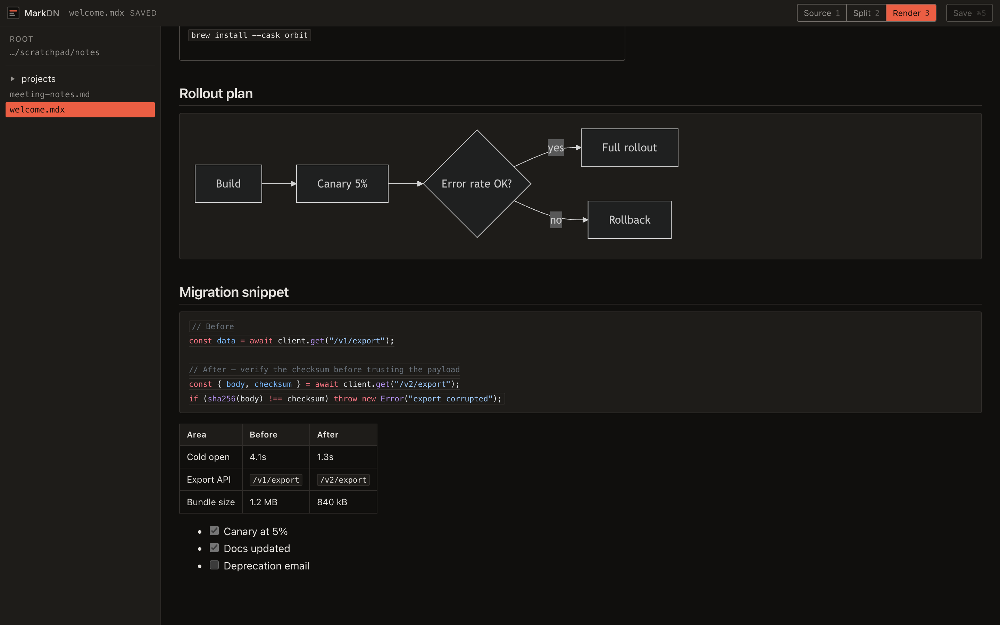

Every part of the document, rendered.
Diagrams, components and highlighted code, live beside the source you are typing. A native window over a folder of plain files that stay plain files.
curl -fsSL https://raw.githubusercontent.com/filipecabaco/markdn/main/install.sh | sh
Two panes, one document.
Scroll either side. The other follows by block, not by percentage, so a three-line mermaid fence and the 200px diagram it draws stay level with each other. The rail between them marks where you are in both at once.
Try it: scroll either pane below, or switch which one you want.
Type roughly what you remember.
One palette over every document under your folder and every command in the
app. dsn finds work/design-notes.md three folders
down. Open it with nothing typed and it shows what you touched last.
Things to type
Matching is by subsequence, ranked: a run of letters beats scattered ones, and a hit in the file name beats one in the folders above it.
Long documents scroll themselves.
Auto-scroll paces the rendered pane at whatever speed suits the material. Change it while it runs, hold it to read a paragraph twice, or reach for the arrow keys: it steps aside for you and picks up a moment after you stop.
The parts other previewers drop.
Tables, task lists and footnotes. Code fences highlighted properly.
mermaid fences drawn as diagrams. And MDX components resolved
from a registry, so what appears in the preview is what publishes — nothing
in the document is ever executed.

Your folder, untouched
Nothing is imported or filed in a database. Save writes the same
.md, .markdown or .mdx you opened, in
place.
Components that render
Alert, Callout, Card and
Tabs, insertable from a menu so you are never typing JSX by hand.
Two designed themes
Light and dark are drawn separately, not one palette inverted. Pick either, or follow the system.
Settings, not preferences
Six things that change what the app does: folder, theme, default view, text size, scroll speed, hidden files.
Your assistant edits the file you have open.
MarkDN serves the documents it is showing you over MCP. Ask Claude to restructure a spec, fold review notes into a draft, or write the changelog for a release, and the change lands in the window you are already reading — no paste back, no second copy of the file, no guessing whether the agent saw the latest version.
It can also ask which components exist, so the MDX it writes is MDX that renders. And it only ever sees the folder you pointed the app at.
http://localhost:43118/mcp
| ⌘K | Find a document, or run a command |
|---|---|
| ⌘⇧P | Commands only |
| ⌘1 2 3 | Source, split, render |
| ⌘S | Save |
| ⌘⇧C | Insert a component |
| ⌘, | Settings |
| ⌘Space | Start, pause, resume auto-scroll |
| ↑ ↓ | Scroll by hand, any time |
| + − | Auto-scroll faster, slower |
| Formats | .md · .markdown · .mdx |
|---|---|
| Renders | GFM, mermaid, highlighted code, MDX components, images |
| Components | Alert, Callout, Card, Tabs, Tab |
| Platforms | macOS 13+ (Apple silicon and Intel), Linux x86-64 |
| Agents | MCP over local HTTP |
| Network | None. Everything stays on the machine |
| Source | Elixir and React, on GitHub |
Two commands, one window.
MarkDN opens on your home folder and you point it wherever your notes live. Nothing to sign in to, nothing to sync.
MACOS · HOMEBREW
brew tap filipecabaco/markdn https://github.com/filipecabaco/markdn && brew install --cask markdn
MACOS AND LINUX · ONE LINE
curl -fsSL https://raw.githubusercontent.com/filipecabaco/markdn/main/install.sh | sh
MarkDN ships unsigned for now, so the installer clears the macOS quarantine flag for you. Building from source is documented in the repository.